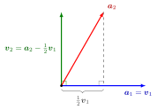

Each step removes from aj its orthogonal projection onto the span of the earlier vectors; what is left, vj, is the component of aj in the orthogonal complement of that span. Dividing by the norm ∥vj∥=vj⋅vj (the Euclidean norm in Rn) then gives a unit vector. Since the qi are already orthonormal, the update can equally be written vj=aj−i<j∑(aj⋅qi)qi.

The figure shows the second step of the example below, drawn in the plane spanned by a1=(1,1,0)⊤ and a2=(1,0,1)⊤ with true lengths. The projection of a2 onto v1=a1 is 21v1, since (a2⋅v1)/(v1⋅v1)=21. Removing it leaves v2=a2−21v1=(21,−21,1)⊤, the dashed perpendicular moved to the origin, which is orthogonal to v1.
Linear independence is what guarantees vj=0, so that the division is allowed. The output depends on the order of the input: reordering the aj generally gives a different orthonormal basis of the same space.
A frequent slip is to project onto the original ai instead of the new vi; the ai are not orthogonal, so their projections overlap and the result is wrong.
vj=0 occurs exactly when aj∈span{a1,…,aj−1}; run on any list, the algorithm detects dependence, and discarding such aj yields an orthonormal basis of the span of the list.
Every finite-dimensional inner product space has an orthonormal basis, and every orthonormal list extends to one.
In floating-point arithmetic the classical version loses orthogonality; the modified version, which subtracts projections one at a time from the updated vector, is the numerically preferred form.
Beyond the course
Many textbooks collect the Gram-Schmidt output in a factorization A=QR of a matrix with independent columns, with Q having orthonormal columns and Rupper triangular. This QR decomposition is not part of Math V.